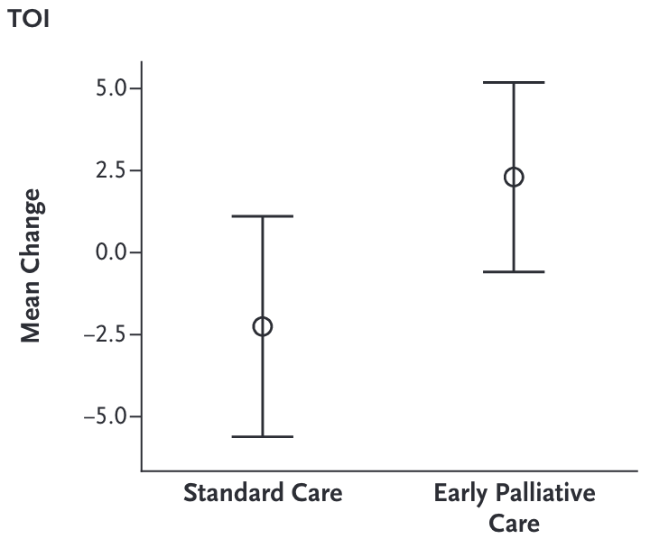
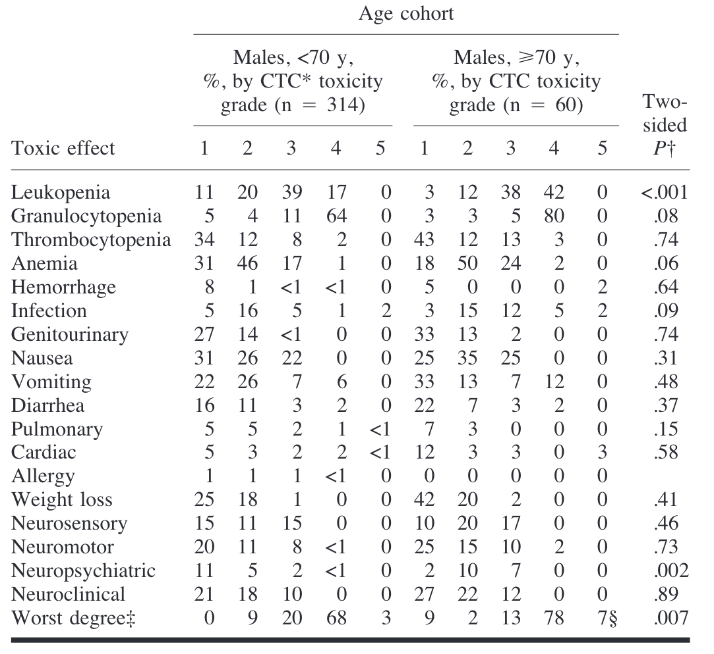
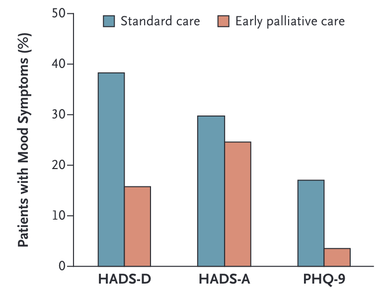
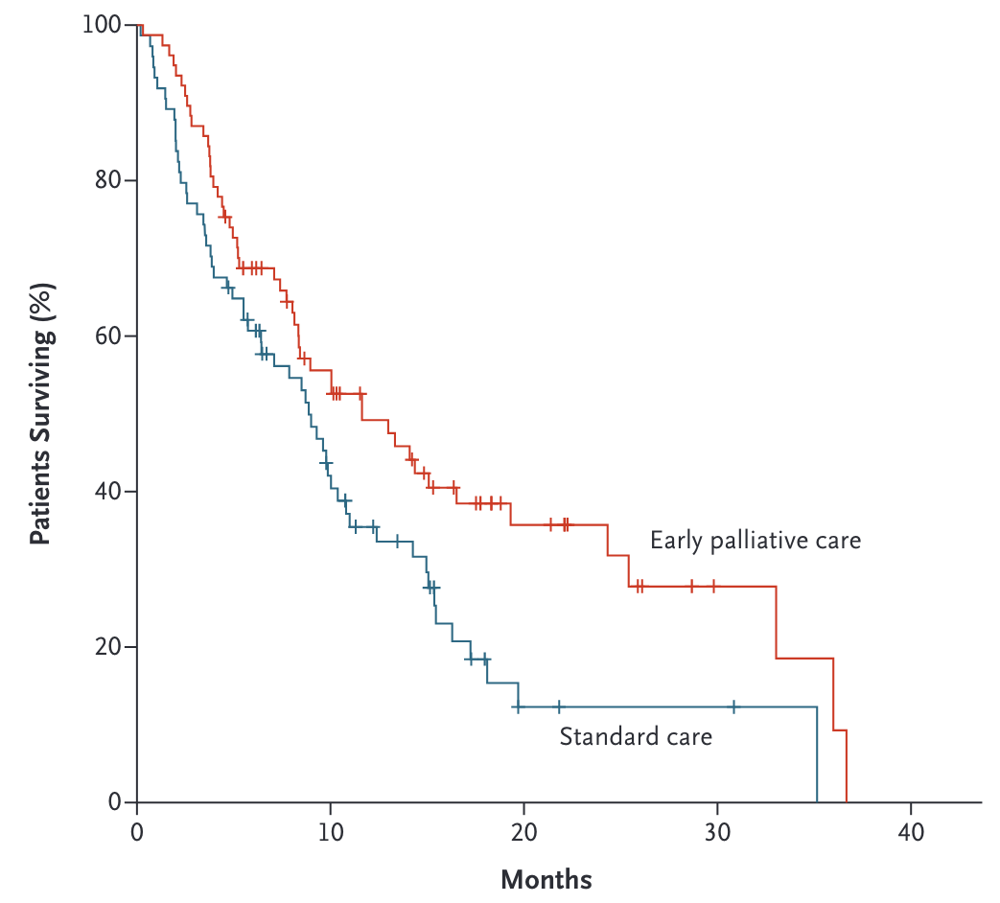
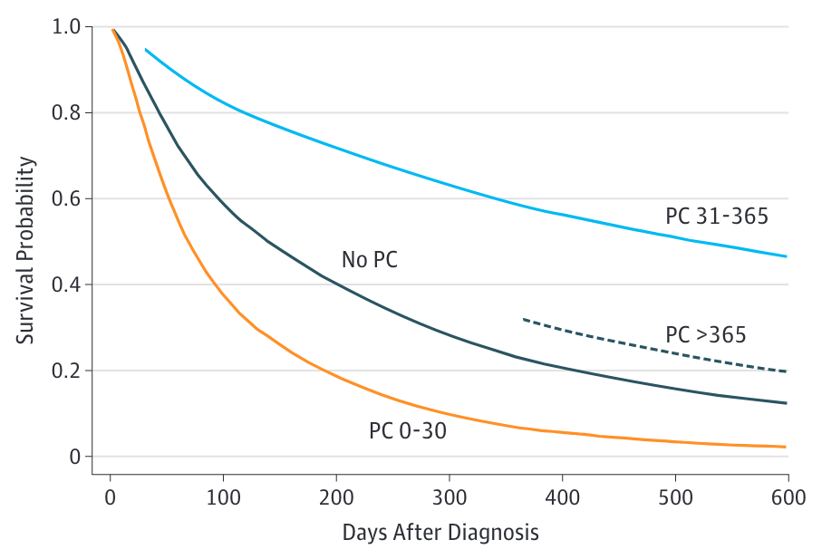

Communication in palliative care
Introduction
What is palliative care?

Disease trajectories and palliative care phases (RACGP 2023)
Benefits
Early Palliative Care for Patients with Metastatic NSCLC (Temel et al. 2010)
- Ambulatory patients with newly diagnosed metastatic NSCLC
- Early palliative care + standard oncologic care vs. standard oncologic care
- Board-certified palliative care physicians and advanced-practice nurses
Quality of life
An improvement of TOI (Trial Outcome Index) of 5 points is similar to that of patients who responded to cisplatin-based chemotherapy (Temel et al. 2010)
ECOG Trial
599 patients with NSCLC were randomly assigned to receive 1
- cisplatin plus etoposide
- cisplatin plus standard dose paclitaxel
- cisplatin plus higher dose paclitaxel with (g-csf)
The objective response rate
(complete + partial remissions)
- Cis/Eto 12.4%
- Cis/Pacli 25.3%
- Cis/Pacli (high dose) 27.7%
Reported Toxicity in 5592
Relative toxic effects (CTC), by age reported in the Eastern Cooperative Oncology Group 5592. (Langer et al. 2002)
Depressive symptoms
Early integration led to significantly lower (almost 50%) Rates of depression (Temel et al. 2010)
This benefits are known
“Interventions that focus on communication about palliative and end-of-life care, using palliative care specialists, have demonstrated improved quality of life, decreased symptoms of depression, and reduced intensity of care at the end of life.” (Curtis et al. 2013)
Survival
Early integration of palliative care prolonged survival by approximately 2 months (Temel et al. 2010)
Survival

The Role of Communication
In the study by Temel et.al.
Specific attention was paid to
- psychosocial symptoms
- establishing goals of care
- assisting with decision making regarding treatment
- coordinating care on the basis of the individual needs of the patient
- physical symptoms
Early Palliative Care in Advanced Lung Cancer: A Qualitative Study
“PC clinicians focused on establishing relationships with patients and determining their individual needs and preferences for information early in the illness.”(Yoong et al. 2013)
Key components
- relationship and rapport building
- addressing symptoms
- addressing coping
- establishing illness understanding
- discussing cancer treatments
- end-of-life (EOL) planning
- engaging family members
Elements of communication in Palliative Care
Clarification of treatment goals
Breaking bad news
Communicating Prognosis
Advanced care planning (talking about dying)
Referral to a palliative care unit
Treatment goals are often unclear
58.2% of the patients had an inaccurate perception of treatment intent (Soylu et al. 2016)
69–81% of palliative patients belive in the curative intention of their treatment (Minichsdorfer et al. 2021)
Why do patients benefit from clarification?
Cancer directed treatment

Hollistic view

lifelong human development
- reconnecting with one’s family
- making funeral and/or burial plans
- finding meaning in the dying experience
Benefits for patients
Patients who received aggressive medical interventions had worse QoL in the final week of life
The inverse was true for hospice care, where patients’ QoL improved the longer they were enrolled
Benefits for caregivers
Caregivers of patients who received any aggressive care were at higher risk for developing:
- Major Depressive Disorder
- experiencing regret
- feeling unprepared for the patient’s death
Relationship between patients’ QoL near death and their caregivers’ QoL
- Overall QoL
- self-reported health
- physical functioning
- mental health
- improvements in self-rated change in health
Side effects
Intervention
(Curtis et al. 2013) conducted a study involving an intervention based on a residential workshop designed to enhance communication skills for oncology fellows. The intervention consisted of eight 4-hour sessions led by a physician and a nurse.
Effects on practical abilities
- significant improvement in participants’ ability to deliver bad news
- better response to emotion
- able to discuss transitions to palliative care significantly better
Does it translate to actual patient care?
This was a negative study (no significant change) on the effect on patient-, family-, and clinician-reported outcomes
Side effects
A significant increase in depressive symptoms, with an increase of 2.2 PHQ-8 points.
Depression scores for patients of the most senior trainees were significantly lower than those for patients of first-year residents.
Comparisson with psychotherapy
- positive effects 95.6%
- at least one adverse event (52.6%)
Focus: Generalist palliative care
Definition
- No standardly accepted definition
- Treatment is provided by staff whose main field of work is not in palliative care
- The patient situation is less complex
- Structural requirements are not compulsory
As opposed to: Specialist palliative care
Multiprofessional team
A specialist palliative care core team must comprise members from at least three professional groups
- physician
- nursing profession
- other professional group
Of these at least the physician and nurse must possess a specialist palliative care qualification.
Who bennefits from specialist palliative care?
Bereavement (as an example)
losing a loved one to death (or dying) is an inherent part of human life and only about 7% of bereaved older adults will develop complicated grief. (Shear, Ghesquiere, and Glickman 2013)
Interventions
Universal
Selective
Indicated
Possible indications in Germany
- Complex symptoms or distress due to problems
- Uncertainty in setting treatment goals
- Complex medical or nursing care
- Home care is overstrained or uncertain
Does everybody need to talk about it?

General guidelines
Communicacion done wrong
SPIKES
S: setting
P: perception
I: invitation
K: knowledge
E: empathy
S: strategy
How am I going to tell him?

P: perception
Implement the axiom: “before you tell, ask.”
He already knows

Communication is setting and team work
Always together, alway sitting
Prognosis
Only 25% of the physicians’ predictions of survival were accurate within 1 month. Two-thirds was overestimated, particularly for those patients who had shorter survival. 1
Prognostic error is widespread, only around 20% of estimates are accurate 2
Only 20% of predictions were accurate within 33% of actual survival 3
Prevention
Communicacion done right
In summary
Who
What
When
How